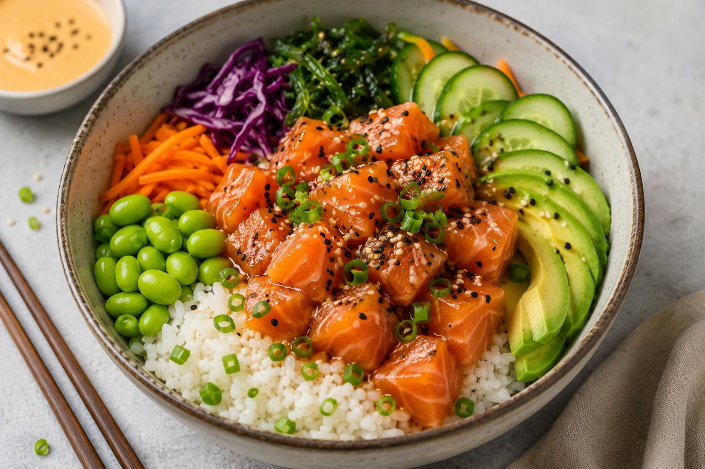

Home
Salmon Poke Bowl

Description:
Salmon poke bowl is a fresh and healthy dish made with sushi rice,raw salmon,
vegetables, and soy sauce. It is colorful, easy to prepare, and perfect for
a light lunch or dinner.
Ingredients:
- Raw salmon
- Sushi rice
- Avocado
- Carrot
- Cucumber
- Edamame beans
- Seaweed salad
- Roman salad
- Sesame seeds
- Mayo
- Soy sauce
Steps:
- Cook the sushi rice and let it cool.
- Cut the raw salmon into small cubes.
- Slice the roman salad, avocado, cucumber, and carrot.
- Prepare the edamame beans and seaweed salad.
- Add the rice to a bowl.
- Arrange the salmon and vegetables on top of the rice.
- Add sesame seeds, mayo, and soy sauce.
- Serve fresh and enjoy.